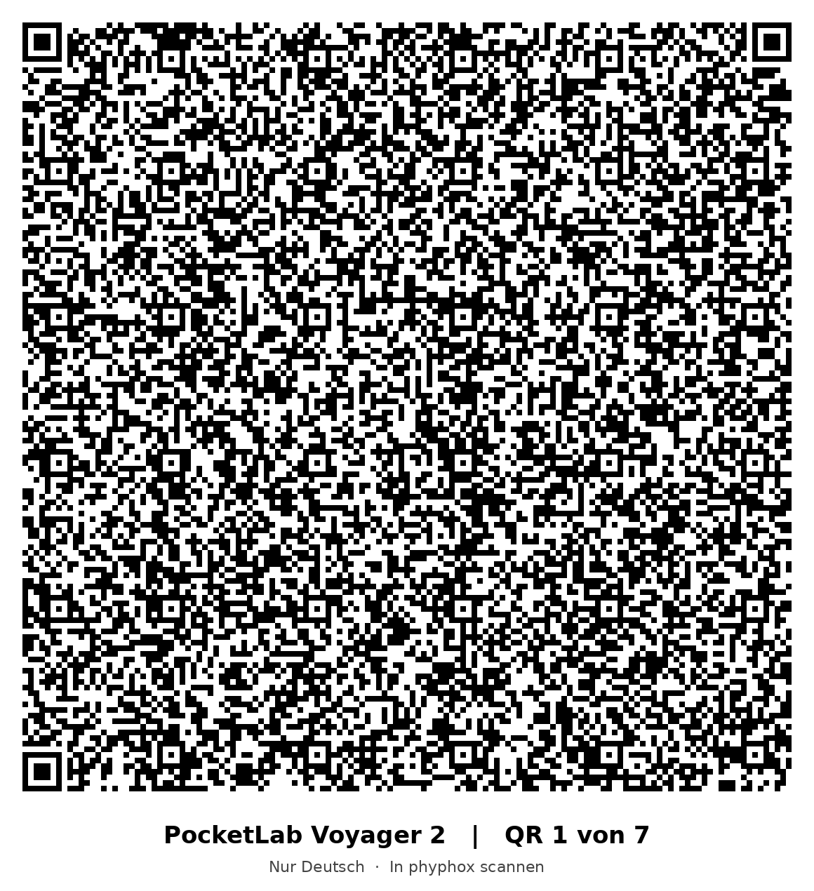

01 Direkter Download
Speichere die gewünschte Experimentdatei auf dem Smartphone und öffne oder importiere sie anschließend in phyphox.
Deutsch herunterladen Deutsch + EnglischVoraussetzungen: Voyager 2, ein Android-Smartphone mit Bluetooth und die phyphox-App. Die zweisprachige Datei verwendet die eingestellte App- beziehungsweise Gerätesprache.
02 Online-QR-Code
Öffne den QR-Scanner im phyphox-Hauptmenü und scanne diesen Code. phyphox lädt damit die zweisprachige Experimentdatei. Das Smartphone benötigt für diesen Import eine Internetverbindung.
Direkt zur zweisprachigen Experimentdatei
Der Code enthält einen Verweis auf die auf dieser Seite bereitgestellte .phyphox-Datei.
03 Deutsch – Offline-QR-Codes (7 Stück)
Lade das QR-Paket vorab herunter oder öffne die Codes auf einem zweiten Bildschirm. Scanne anschließend alle sieben nummerierten Codes nacheinander mit dem phyphox-QR-Scanner. Der Import selbst benötigt keine Internetverbindung; die Messung verwendet weiterhin Bluetooth.

Messung durchführen
- Voyager 2 einschalten, Bluetooth am Smartphone aktivieren und eine bestehende Verbindung zur PocketLab-App beenden.
- Experiment in phyphox öffnen und den Voyager 2 verbinden.
- Die phyphox-Aufzeichnung mit ▶ starten. Unter Sensorauswahl / Sensor Selection die gewünschten Messgrößen aktivieren und DATEN STARTEN / START DATA antippen.
- Die Diagramme unter Bewegung / Motion und Umgebung / Weather beobachten.
- Zum Wechsel der Messgrößen DATEN STOPPEN / STOP DATA wählen, die Sensorauswahl ändern und den Datenstrom wieder starten.
- Nach der Messung den Datenstrom stoppen, die phyphox-Aufzeichnung pausieren und über das Exportmenü eine CSV-Datei speichern.
Erfasste Messgrößen
Beschleunigung (m/s²), Winkelgeschwindigkeit (rad/s) und Magnetfeld (µT) werden jeweils in drei Raumachsen aufgezeichnet. Hinzu kommen interne Temperatur (°C), barometrischer Druck (hPa in der Anzeige, Pa im CSV-Export), relative Luftfeuchtigkeit (%), Hitzeindex (°C) und Umgebungslichtintensität (lx).
Die acht Messarten sind einzeln oder gleichzeitig auswählbar. Die Zeitdiagramme und der CSV-Export dienen der anschließenden Auswertung.
Stand der Erprobung und Einschränkungen
Die BLE-Steuerung, dynamische Sensorauswahl, Messwertdarstellung und der CSV-Export wurden mit einem PocketLab Voyager 2 und einem Android-Smartphone praktisch getestet. Die deutsche Offline-QR-Variante wurde auf Android importiert. Der abschließende Importtest des Online-QR-Codes in phyphox steht noch aus.
Eine unabhängige Kalibrierung und eine systematische Untersuchung der Messunsicherheit gehören bisher nicht zum Testumfang. Beim Start können Einschwingwerte auftreten. Der IR-Distanzsensor und externe Fühler sind noch nicht angebunden.